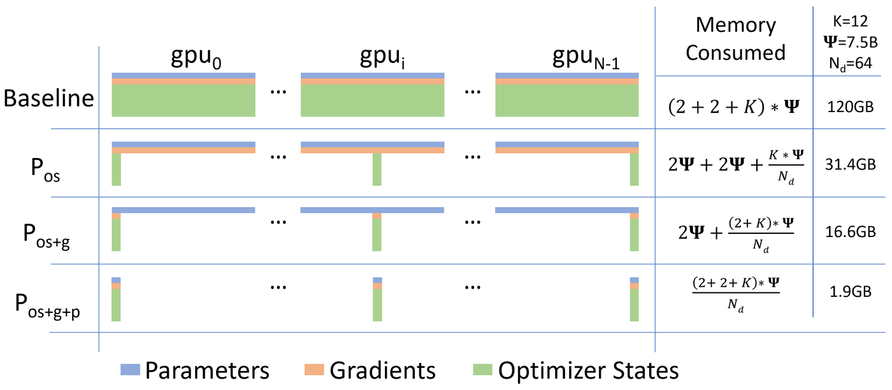
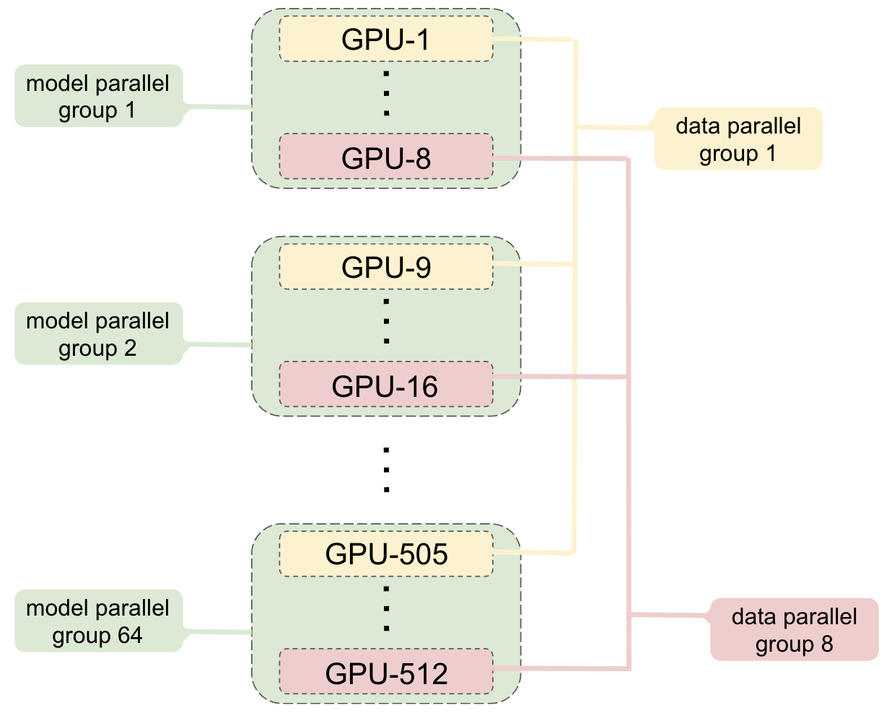
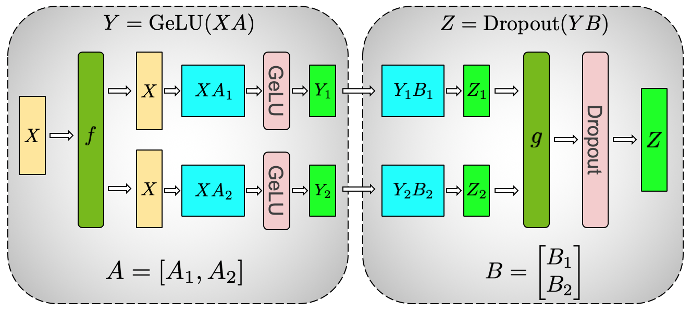

This is a single-volume condensation of Role Track 4 (Distributed Training Systems Engineer) and the base material it stands on. It holds the parts you need at your fingertips: the decision rules, the numbers and formulas worth memorizing, the traps that waste the most time, a rapid-fire self-test, and a one-page cheat sheet.
How to use it. Read Section 1 once, slowly. It is the judgment layer: given a model and a cluster, what to pick and why. Use Section 2 as a reference while you work. It pairs every number with its units and its meaning, because a number without units is a rumor. Read Section 3 before you debug anything; each trap names its symptom so you can match what you see. Work Section 4 with the answers covered. Print Section 5.
What this pack assumes. You have read the base volumes on distributed training, the two appendices on reliability and parallelism, and the Track 4 chapters. This pack does not re-teach. It compresses.
Scope note. Cluster work is specific to the hardware in front of you. The numbers here are the ones that survive across clusters: ratios, formulas, and order-of-magnitude thresholds. Where a value is site-specific, the text says so.
Section 1: Decision rules
Five decisions carry most of the role. Each rule below fits on an index card. The reasoning behind each one is in the track chapters; here is the operational form.
1.1 Parallelism strategy selection: memory first, then bandwidth
The order is fixed: DDP, then FSDP, then tensor parallelism, then pipeline parallelism. You move down the list only when the current option fails a concrete test. Context and expert parallelism are not on this ladder; they answer different questions (sequence length, MoE routing) and layer on top.
Does one GPU hold the model +
+--> optimizer state + activations? --YES--> DDP
| (pure data parallel)
NO
|
v
Does it fit with FSDP sharding?
(params + grads + optimizer / N ranks)
|
YES <----+----> NO
| |
v v
Is per-step comm Can tensor-parallel
under ~15% of degree stay inside
step time? one NVLink domain?
| |
YES -+- NO YES --+-- NO
| | | |
v v v v
FSDP Add TP TP in Add PP
alone inside node + across
the node FSDP/DP nodes
across
|
v
Enough microbatches
to keep the bubble
under ~20%?
/ \
YES NO
| |
v v
3D parallel Rebalance:
(DP x TP x PP) fewer stages,
more nodes, or
smaller model
per stage
How to read this diagram. Start at the top. Every diamond is a measurement, not an opinion. "Does it fit" is arithmetic on parameter bytes, optimizer bytes, and activation bytes. "Is comm under 15%" comes from the alpha-beta model (transfer time = fixed latency per step + bytes / bandwidth; 1.2 works it fully) or a profile. "TP inside the NVLink domain" is a hardware fact about your cluster. The last gate is the bubble formula from Section 2: (p-1)/(m+p-1). The final answer always comes from running the candidate layouts and reading the trace, but this ladder keeps you from trying the obviously wrong layouts first.
The six axes in one table:
Axis
What is split
What you pay
When it wins
Data (DDP)
Batch across replicas
One gradient all-reduce per step
Model fits on one GPU
Sharded data (FSDP / ZeRO-3)
Batch plus params, grads, optimizer
All-gather plus reduce-scatter per step
Big model, limited per-GPU memory
Tensor (TP)
Individual layers across GPUs
All-reduce inside every layer, fwd and bwd
Fast intra-node links (NVLink)
Pipeline (PP)
Layers across stages
Idle bubble, point-to-point sends
Many layers, slow cross-node links
Context (CP)
Sequence across GPUs
Attention-block exchanges
Long sequences
Expert (EP)
MoE experts across GPUs
All-to-all dispatch and combine
MoE models

Baseline: every GPU holds 120 GB (params plus grads plus optimizer states). Shard the optimizer states: 31.4 GB. Shard gradients too: 16.6 GB. Shard parameters as well: 1.9 GB. Figure: Rajbhandari et al., ZeRO (arXiv:1910.02054).FSDP is ZeRO-3 with on-demand materialization. Each GPU keeps one shard at rest; an all-gather rebuilds the full layer just for the forward pass, then frees it. Backward repeats the all-gather and reduce-scatters the gradients. The price is 1.5x the all-reduce traffic of DDP; prefetch hides it when each layer does enough compute.
The two traps this ladder exists to prevent. TP across slow inter-node links is almost always a loss: the per-layer collectives that cost 19 ms on NVLink cost 350 ms on InfiniBand, and no overlap hides that. PP with too few microbatches can idle nearly half the step: 8 stages with 8 microbatches is a 47% bubble.
Key takeaways
The ladder is DDP -> FSDP -> TP -> PP, gated by memory fit, comm fraction, NVLink domain, and bubble size.
Every gate is a number. If you cannot compute it, you are guessing.
A 4-stage pipeline over 6 microbatches. Forward passes warm up diagonally, backward passes drain the same way, and the dashed cells are the bubble: stages waiting with nothing to do. Bubble fraction = (p-1)/(m+p-1), here 3/9 = 33%. The pack's warning case: 8 stages with 8 microbatches idles 47% of the step. 1F1B trims the middle bubble by starting backward passes earlier.
1.2 Collective algorithm selection: ring for bandwidth, tree for latency
Every collective is three decisions: the operation (what the math needs), the algorithm (how ranks cooperate), and the protocol (how bytes cross one link). The rule NCCL (NVIDIA's GPU collective-communications library) itself uses:
Ring all-reduce in two phases. Phase 1 (reduce-scatter): each GPU accumulates one chunk around the ring, so every GPU ends with one fully reduced chunk. Phase 2 (all-gather): each GPU broadcasts its chunk, so everyone ends with all chunks. Bandwidth-optimal: each GPU sends 2*(N-1)/N of the bytes. The tree algorithm wins only when latency, not bytes, dominates.
Small messages: tree + LL protocol. The tree finishes in 2*log2(N) phases instead of 2(N-1) steps. LL moves 8 bytes per flag with microsecond latency via CPU polling.
Large messages: ring + Simple protocol. The ring keeps every link busy in every step; each rank moves 2(N-1)/N * M bytes, about 2M at large N. Simple is bulk DMA at full bandwidth.
In-network reduction (CollNet / NVLS) only where the hardware allows. SHARP-capable InfiniBand switches (SHARP: the switch itself sums the data, so ranks move less traffic), or NVSwitch inside the node. Validate with it off first: misconfigured in-network reduction is a source of silent wrongness.
The crossover sits in the low megabytes on IB-class fabrics. On 64 ranks with 40 GB/s effective bandwidth and 5 us per step, the tree wins below about 2.3 MB and the ring wins above. The calculator in Section 2 recomputes this for your fabric.
When to override the tuner. Almost never, and only with a measurement. Two legitimate cases: forcing Tree/LL to work around a sick ring path on your fabric, and forcing Ring/Simple when you know the message mix better than the tuner does. If forcing the tree fixes a hang, the ring path on your fabric is suspect, and that is a hardware ticket, not a config win.
The protocol table, for reference:
Protocol
Chunk on the wire
Strength
Weakness
Simple
Large (bulk DMA)
Highest bandwidth
Fence and sync latency per chunk
LL (low latency)
8 bytes
Lowest latency, CPU-polled
Low bandwidth; burns host CPU
LL128
128 bytes
Middle ground
Needs 128-byte atomic writes (not all fabrics)
The protocol is not a quality setting. LL is not "worse" than Simple. For a 4 KB all-reduce across 64 ranks, tree + LL finishes in about 60 us while ring + Simple takes about 630 us. Latency dominates small messages. Bandwidth dominates large ones. The alpha-beta model decides, not the name.
1.3 Checkpoint interval: Daly, not vibes
Let C be the stall cost of one checkpoint in seconds and mu the mean time between failures in seconds. The interval that minimizes expected waste is:
tau* = sqrt(2 * C * mu)
The shape behind it: failures land at random points in the interval, so average lost work per failure is tau/2. That term rises with the interval. Write overhead per unit time is C/tau, which falls with the interval. Their sum is U-shaped. The minimum is where they balance.
Worked reference (70B, Adam, BF16, 1,000 GPUs): C = 200 s of stall, mu = 50.7 h = 182,520 s.
tau* = sqrt(2 * 200 * 182,520) = 8,544 s = 142 min
About every 2.4 hours. Expected loss per failure is tau/2 = 71 min of work plus restart time. Cut the stall to 30 s with async checkpointing and the optimum drops to 55 min: faster writes justify more frequent checkpoints, which is the whole point of async checkpointing expressed as a number.
The U-curve below is computed, not drawn: waste per hour at several intervals for the same C and mu. The script that computes it:
# Daly U-curve: expected waste per hour vs checkpoint interval.
# WHY: the curve is computed from waste(tau) = C/tau + tau/(2*mu),
# not hand-drawn, so the 142-min optimum in the text and the bars
# below cannot disagree.
# WHAT BREAKS: C and mu are estimates; the curve's bottom is shallow,
# so the policy (checkpoint roughly every 1-3 h) survives bad
# estimates. Do not over-tune the interval.
C = 200.0 # seconds of write stall per checkpoint
mu = 50.7 * 3600 # MTBF in seconds (1k-GPU run)
def waste(tau_s):
# Write overhead per unit time plus expected lost work per failure.
return C / tau_s + tau_s / (2 * mu)
print(" interval waste/hr")
for minutes in (15, 30, 60, 142, 240, 480, 960):
tau = minutes * 60
w = waste(tau)
bar = "#" * int(round(w * 250))
tag = " <-- optimum" if minutes == 142 else ""
print(f" {minutes:>4} min {w*100:5.2f}% {bar}{tag}")
Its executed output, read as a table with a picture attached: The bottom is shallow: 60 min or 240 min costs only slightly more than the 142-min optimum. Do not over-tune; C and mu are estimates anyway.
interval waste/hr
15 min 22.47% ########################################################
30 min 11.60% #############################
60 min 6.54% ################
142 min 4.68% ############ <-- optimum
240 min 5.33% #############
480 min 8.58% #####################
960 min 16.13% ########################################
How to read this figure. Each bar is expected waste as a fraction of run time: write overhead plus expected lost work per failure. The left side is the write tax (checkpointing every 15 min spends 22% of the run writing). The right side is failure exposure (checkpointing every 16 h loses 16% to rework). The optimum sits where the two marginal costs balance. The shallow bottom means the policy is forgiving: being near right beats being exactly right.
Retention rule. Keep the last 3 checkpoints plus periodic older ones (one per day). Never keep exactly one: a single corrupt write loses everything. Storage is cheap next to the GPU-hours the checkpoint protects.
1.4 Recovery strategy: the guardian loop
Failures are the normal operating condition at scale, not an exception. The recovery strategy is a control loop with a time budget: detect plus isolate plus resume stays under 10 minutes.
+------------------+
| HEARTBEAT MONITOR| every rank reports step completions
+--------+---------+
|
v
step-time anomaly? ----NO----> (keep monitoring)
|
YES
|
v
+---------------+--------------------------------------------------+
| classify | hang: no rank completes a step past the timeout |
| | slow rank: one rank persistently over median |
| | loss spike: loss over 1.5x running median, W logs |
| | node gone: heartbeat lost entirely |
+-------+-------+--------------------------------------------------+
|
v
+---------------+
| isolate | quarantine suspect nodes; shrink job or re-queue;
| | bad nodes NEVER rejoin silently
+-------+-------+
|
v
+---------------+ recipe issue? ----YES----> roll back to a
| resume | pre-spike checkpoint, page the human
| latest good |
| checkpoint; |
| verify first |
| 10 steps |
+---------------+
How to read this diagram. The loop starts with heartbeats: every rank reports step completions and the guardian watches the distribution. An anomaly triggers classification because the response differs by cause. A dead node gets quarantined and the job re-queues without it. A hang gets a kill and a clean resume. A loss spike gets a rollback to before the spike began, and a human gets paged after the second rollback. The loop closes back to monitoring.
Detection thresholds, concretely:
Hang: no rank completes a step for longer than 5x the p99 step time (p99: the 99th percentile; 99% of steps are faster). A fixed wall-clock guess breaks when the workload changes.
Straggler: one rank's step time persistently over the fleet median. Above 1.1x investigate, above 1.3x act.
Loss spike: loss above 1.5x the running median for several consecutive logs. Roll back automatically.
Node gone: heartbeat lost. Quarantine at once; do not wait to see if it returns.
The rollback protocol for loss spikes. Stop and checkpoint nothing (current weights are suspect). Roll back to the last checkpoint saved before the spike started. Skip past the bad batches using the saved data position. Resume with the learning rate cut 2-4x for a few hundred steps, then restore the schedule. If it spikes again at the same data position, the data is the problem: investigate offline.
Isolation discipline. Quarantined nodes get re-qualified with the bring-up tests, abbreviated, before they return to the scheduling pool. Nodes that fail re-qualification get a hardware ticket. Node-level failure concentration is real: in one study, 3 of 63 nodes caused over half of all exclusions.
1.5 Precision selection: BF16 by default, FP8 with a recipe
Precision is a three-way trade between memory, speed, and numerical safety. The rule:
Default to BF16. It has the same exponent range as FP32, so overflow behavior matches what most recipes were designed for. No loss scaler needed for most layers.
Use FP16 only when BF16 is unavailable. Its narrower range overflows sooner. If a NaN appears right after a precision change, the change is the prime suspect. BF16 is the safer drop-in.
Use FP8 when the hardware and recipe both support it. H100, B200, and TPU Ironwood have FP8 matmul support. FP8 halves the bytes of BF16 (memory and bandwidth win), but it needs careful per-tensor scaling and some layers (norms, softmax, the loss) usually stay in higher precision. Transformer Engine-style libraries automate the scaling; validate the recipe before trusting it at scale.
The MFU honesty rule. MFU is achieved FLOPs divided by peak FLOPS, and the peak must match the precision you actually used. Quoting FP8-achieved FLOPs against the FP8 peak is correct; quoting BF16 math against the FP8 peak halves the MFU silently. Always state the peak: "MFU 55% against the 989 TFLOPS BF16 dense peak."

Tensor parallelism stays inside the NVLink domain; data parallelism crosses nodes. This is the 3D-parallel layout the decision ladder builds toward. Figure: Shoeybi et al., Megatron-LM (arXiv:1909.08053).

The first GEMM's weight A is split by columns (A1, A2); each GPU computes its half, applies GeLU, then multiplies by its row-split half of B. The f and g ops are the all-reduces that stitch the halves back together. This is why TP needs fast intra-node links: every layer pays two all-reduces. Figure: Shoeybi et al., arXiv:1909.08053.
>Key takeaways
Parallelism: DDP -> FSDP -> TP -> PP, each gate a measurement.
Collectives: tree + LL below the crossover, ring + Simple above; override the tuner only with a measurement.
Checkpointing: tau = sqrt(2C*mu), retention K=3 plus daily.
Recovery: detect, classify, isolate, resume, under 10 minutes total; rollback protocol for spikes.
Precision: BF16 default; FP8 only with a validated recipe; always quote the peak your MFU uses.
Section 2: Must-memorize numbers and formulas
Every entry gives the value, the units, and what it means operationally. These are the numbers that survive a cluster change.
2.1 Throughput and efficiency
#
Quantity
Value
Units / meaning
1
6ND rule
6 * N_params * D_tokens
FLOPs to train N parameters on D tokens. 2N forward, 4N backward. The numerator of every MFU calculation and every training-cost estimate.
2
MFU
(6 * N * tok/s) / (n_gpus * peak)
Dimensionless ratio. Achieved model FLOPs over hardware peak. Counts only useful math: comm, recompute, and bubbles lower it.
3
H100 BF16 dense peak
989 TFLOPS
TeraFLOPs per H100 SXM. The denominator for BF16 MFU. A100 is 312 BF16 TFLOPS for comparison.
4
Healthy MFU target
50 to 65%
Dense transformer on H100-class hardware. Below 40% means profile now.
5
70B reference point
9,423 tok/s = 50% MFU
Global throughput on 8x H100, BF16. A healthy 70B run should beat this.
6
Pipeline bubble (1F1B)
(p-1) / (m+p-1)
Fraction of the PP schedule lost to fill and drain. p stages, m microbatches.
7
Bubble worked values
8x32: 18%; 8x8: 47%; 6x18: 22%
Read as: stages x microbatches. PP without enough microbatches idles nearly half the step.
8
Goodput
Useful tok/s after all overhead
What the model actually receives. A 60% MFU run with constant restarts can deliver less than a 50% MFU run that never stops.
9
Straggler factor
max / median rank step time
Above 1.1x investigate, above 1.3x act. One 30%-slow rank in a 1,000-rank job is a 30% tax on everything.
import math
# Core calculators: MFU, pipeline bubble, FSDP communication volume.
# WHY: these three numbers answer "is the run healthy", "does PP make
# sense here", and "is the interconnect the bottleneck".
# WHAT BREAKS if changed: using the FP8 peak instead of the BF16 peak
# silently shifts every MFU. TFLOPS vs FLOPS shifts it by 1e12.
H100_BF16_PEAK = 989.4e12 # dense BF16 TFLOPS per H100 SXM, vendor spec
def mfu(n_params, tokens_per_sec, n_gpus, peak=H100_BF16_PEAK):
# Achieved FLOPs come from the 6ND rule: ~6 FLOPs per parameter per
# token (2 forward + 4 backward). Divide by hardware peak.
achieved = 6.0 * n_params * tokens_per_sec
return achieved / (n_gpus * peak)
def pipeline_bubble_fraction(n_stages, n_microbatches):
# 1F1B schedule: fill takes (p-1) slots, drain the same. Total
# schedule is (m+p-1) slots, so the idle fraction is (p-1)/(m+p-1).
p, m = n_stages, n_microbatches
return (p - 1) / (m + p - 1)
def fsdp_comm_per_rank_gb(n_params, n_ranks, bytes_per_param=2):
# FSDP pays the 2(N-1)/N factor twice per step: all-gather of params
# (forward + backward) and reduce-scatter of gradients.
model_gb = n_params * bytes_per_param / 1e9
return 2 * (2.0 * (n_ranks - 1) / n_ranks) * model_gb
print("== MFU: 70B dense, 8x H100, BF16 ==")
N, GPUS = 70e9, 8
for tok_s in (4000, 9423, 12000):
# 9423 tok/s is constructed to land exactly on 50%: the throughput
# a healthy 70B run on 8 H100s should beat.
print(f" {tok_s:>6} tok/s -> MFU {mfu(N, tok_s, GPUS):.1%}")
print("== pipeline bubble (1F1B) ==")
for stages, micros in ((8, 32), (4, 16), (8, 8)):
b = pipeline_bubble_fraction(stages, micros)
print(f" {stages} stages x {micros:>2} microbatches -> bubble {b:.1%}")
print("== FSDP comm per rank per step (70B, BF16) ==")
for ranks in (64, 512):
gb = fsdp_comm_per_rank_gb(70e9, ranks)
print(f" {ranks:>3} ranks -> {gb:6.1f} GB per rank per step")
The executed output of the script above is:
== MFU: 70B dense, 8x H100, BF16 ==
4000 tok/s -> MFU 21.2%
9423 tok/s -> MFU 50.0%
12000 tok/s -> MFU 63.7%
== pipeline bubble (1F1B) ==
8 stages x 32 microbatches -> bubble 17.9%
4 stages x 16 microbatches -> bubble 15.8%
8 stages x 8 microbatches -> bubble 46.7%
== FSDP comm per rank per step (70B, BF16) ==
64 ranks -> 551.2 GB per rank per step
512 ranks -> 558.9 GB per rank per step
How to read this diagram
The MFU rows multiply 6 by the parameter count and the measured tokens per second, then divide by 8 times the H100 BF16 peak. The 50.0% row is the health bar for a 70B run on 8 H100s. A measured 21% means something is badly wrong; the profiling rules in the track's Chapter 5 say where to look.
The bubble rows apply (p-1)/(m+p-1). Eight stages with 32 microbatches wastes 18% of the schedule; with 8 microbatches it wastes 47%. The lesson is one inequality: keep microbatches well above stage count.
The FSDP rows show the 2(N-1)/N factor saturating: 64 ranks and 512 ranks move nearly the same bytes per rank (551 vs 559 GB). At 100 GB/s effective interconnect that is over 5 seconds of pure communication per step, which is why large runs add tensor parallelism to move some of that traffic onto NVLink.
2.2 Collectives and the fabric
#
Quantity
Value
Units / meaning
10
Ring all-reduce bytes
2(N-1)/N * M
Bytes moved per rank for message size M on N ranks. About 2M at large N. Per-rank traffic barely depends on N: 8 to 64 ranks raises the factor from 1.75 to 1.97.
11
All-to-all bytes
(N-1)/N * M
About M per rank. An all-reduce costs roughly twice an all-to-all on the same tensor (scatter plus gather).
12
Alpha-beta model
T = steps*alpha + bytes/BW
Seconds. Ring: 2(N-1) steps of M/N bytes. Tree: 2*log2(N) phases of M bytes. Alpha is per-step latency, BW effective link bandwidth.
13
Ring/tree crossover
~2.3 MB
On 64 ranks, 40 GB/s IB, 5 us per step. Tree wins below, ring wins above. Recompute for your fabric with the calculator.
14
NVLink 4 (H100)
900 GB/s
Bidirectional, per GPU, inside one 8-GPU node via NVSwitch.
15
InfiniBand NDR400
50 GB/s
Per link (400 Gb/s), between nodes. The 900/50 ratio is the 18x cliff: crossing the node boundary costs 18x in per-GPU bandwidth.
16
PCIe 5.0 x16
~64 GB/s
GPU-to-host, for reference when sizing H2D traffic.
17
TP all-reduce worked
10 GB -> 19 ms vs 350 ms
17.5 GB of ring traffic per rank. On NVLink: 19 ms. On IB: 350 ms. This single calculation is why TP stays inside the node.
18
DP grad sync worked
7B, 64 ranks: 0.55 s
27.6 GB per rank over IB at 50 GB/s. Against a 2 s step, comm is 27%: overlap with backward is mandatory, not optional.
19
H100 memory bandwidth
~3,350 GB/s
HBM3 per H100 SXM. A100 80 GB is 2,039 GB/s. Useful when a kernel is memory-bound and you need the roofline ceiling.
20
ZeRO stages (7B example)
Z1: 38.5, Z2: 26.3, Z3: 14.0 GB/GPU
Bytes per GPU: Z1 = 2+2+12/8, Z2 = 2+14/8, Z3 = 16/8 plus one live layer. Comm: Z1 ~1.75M, Z3 ~2.6M (about 1.5x DDP).
Ring all-reduce, 4 ranks, message split into 4 chunks (A B C D):
step 1 (reduce-scatter): step 2: step 3: step 4 (all-gather):
rank0 --A--> rank1 rank0 --B--> rank1 rank0 --C--> rank1 rank0 --D--> rank1
rank1 --B--> rank2 rank1 --C--> rank2 rank1 --D--> rank2 rank1 --A--> rank2
rank2 --C--> rank3 rank2 --D--> rank3 rank2 --A--> rank3 rank2 --B--> rank3
rank3 --D--> rank0 rank3 --A--> rank0 rank3 --C--> rank0 rank3 --B--> rank0
(each rank adds what it receives to its own chunk)
Each rank sends 2*(N-1) chunks of size M/N = 2*3/4*M bytes total.
That is the 2(N-1)/N factor: two trips around the ring, one per phase.
How to read this diagram
Cut the buffer into N chunks. Rank 0 owns chunk 0, rank 1 owns chunk 1, and so on. Each rank is responsible for summing one chunk.
Steps 1-3: reduce-scatter. Every rank sends its current chunk for the neighbor's owned index rightward and adds the received chunk to its own. After N-1 steps, each rank holds the fully summed chunk it owns.
Step 4 onward: all-gather. The summed chunks circulate N-1 more steps, copied not added. After N-1 steps, every rank holds all summed chunks: the full result.
Count the bytes. Each rank moves 2(N-1) chunks of size M/N. The ring keeps every link busy in every step, which is why it wins on large messages.
import math
# Alpha-beta model: ring vs tree all-reduce across message sizes.
# WHY: this is the trade-off NCCL's tuner navigates on every collective.
# When NCCL picks the loser, this model proves it.
# WHAT BREAKS: alpha and bandwidth are EFFECTIVE values, not spec sheets.
# A sick link raises alpha ~10x and the model will disagree with the
# tuner. That disagreement is itself a diagnostic signal.
def ring_allreduce_time(m_bytes, n_ranks, alpha_s, bw_bytes_s):
# Ring: 2(N-1) steps, each moving M/N bytes. Bandwidth-optimal.
steps = 2 * (n_ranks - 1)
chunk = m_bytes / n_ranks
return steps * alpha_s + steps * chunk / bw_bytes_s
def tree_allreduce_time(m_bytes, n_ranks, alpha_s, bw_bytes_s):
# Tree: 2*log2(N) phases, each moving the full M bytes.
# Latency-optimal: step count grows with log N, not N.
phases = 2 * math.log2(n_ranks)
return phases * alpha_s + phases * m_bytes / bw_bytes_s
def crossover_point(n_ranks, alpha_s, bw_bytes_s):
# Binary search for the message size where the times are equal.
lo, hi = 1.0, 1e12
for _ in range(80):
mid = (lo + hi) / 2
if tree_allreduce_time(mid, n_ranks, alpha_s, bw_bytes_s) < \
ring_allreduce_time(mid, n_ranks, alpha_s, bw_bytes_s):
lo = mid
else:
hi = mid
return (lo + hi) / 2
# Fabric: inter-node InfiniBand, effective 40 GB/s, 5 us per step.
N, ALPHA, BW = 64, 5e-6, 40e9
print(f"{'message':>10} {'ring':>12} {'tree':>12} winner")
for m in (4e3, 1e6, 64e6, 1e9):
tr = ring_allreduce_time(m, N, ALPHA, BW)
tt = tree_allreduce_time(m, N, ALPHA, BW)
win = "tree" if tt < tr else "ring"
print(f"{m:>9.0f}B {tr*1e6:>10.1f}us {tt*1e6:>10.1f}us {win}")
cross = crossover_point(N, ALPHA, BW)
print(f"crossover: tree wins below ~{cross/1e6:.1f} MB, ring wins above")
message ring tree winner
4000B 630.2us 61.2us tree
1000000B 679.2us 360.0us tree
64000000B 3780.0us 19260.0us ring
1000000000B 49848.8us 300060.0us ring
crossover: tree wins below ~2.3 MB, ring wins above
How to read this diagram
At 4 KB the tree finishes in 61 us while the ring takes 630 us: latency dominates and the log-step tree wins by 10x.
At 1 GB the ring takes about 50 ms while the tree takes 300 ms: bandwidth dominates and the ring wins by 6x.
The crossover near 2.3 MB is where the two curves meet on this fabric. Map it to training: DDP gradient buckets are typically tens of MB (ring territory); TP per-layer all-reduces are often KB to a few MB (tree territory), which is why NCCL picks the tree there.
If you force Ring everywhere, the small collectives get slower. The tuner is usually right. Override it only with a measurement in hand.
2.3 Checkpointing and failure math
#
Quantity
Value
Units / meaning
21
Checkpoint anatomy (70B)
700 GB total
140 GB parameters (70B x 2 bytes BF16) + 560 GB Adam state (70B x 8 bytes: two FP32 states). Optimizer dominates 4:1. RNG + dataloader state are MBs but required for exact resume.
22
Daly interval
tau = sqrt(2C*mu)
Seconds. C = save stall, mu = MTBF. Example: C=200 s, mu=50.7 h -> 142 min. With async (C=30 s) -> 55 min.
23
MTBF scaling
Inverse with GPU count
Per-GPU-hour failure rate ~1.97e-5 (from Llama 3: 419 unexpected / (16,384 x 54 x 24)). 1,000 GPUs -> ~50.7 h. 16,384 GPUs -> ~3 h.
24
Llama 3 run figures
16,384 H100, 54 days, 466 interruptions
47 planned, 419 unexpected: about one failure every 3 hours. GPU problems 58.7% of unexpected. Effective training time stayed above 90% via automation.
25
Recovery budget
< 10 min total
Detect + isolate + resume. From the guardian-loop lab: fast recovery (2 min/failure) held 86.6% effective time vs 61.0% for slow recovery (10 min/failure) at the same failure density.
26
Autoretry payoff
33.3% chain success
2.7x better than manual recovery. Median 11-min retry interval; downtime 1.9 h vs 3.3 h manual. From a public study of a ~500-GPU cluster.
27
Fail-slow cost
> 1 h silent, minutes to fix
Average fail-slow episode runs over an hour before anyone notices; remediation is 30 s (rebalance) to a few minutes (checkpoint and restart on a healthy node).
28
Spike detector
median + 10*MAD, 5 steps
Loss above median + 10x median-absolute-deviation for 5 consecutive steps = sustained spike. One step is noise; five is a signal.
import math
# Checkpoint budget: byte anatomy, Daly interval, restore times.
# WHY: these three numbers set the run's failure policy. Save too rarely
# and each failure wastes hours; save too often and the write tax eats
# the run. Daly's formula is the optimum, not a guess.
# WHAT BREAKS if changed: effective filesystem bandwidth is not the spec
# sheet. Measure per-rank bandwidth on YOUR cluster during bring-up.
def checkpoint_bytes(n_params, bytes_per_param=2, optimizer_factor=4.0):
# Params at 2 bytes (BF16). Adam keeps two FP32 states per parameter
# (momentum + variance): 8 bytes = 4x the parameter bytes.
params = n_params * bytes_per_param
return params * (1.0 + optimizer_factor)
def daly_interval_s(mtbf_s, checkpoint_cost_s):
# sqrt(2*C*mu). Balances expected lost work (grows with the interval)
# against write overhead (shrinks with the interval). Assumes
# failures are memoryless (Poisson-ish), true for hardware faults.
return math.sqrt(2.0 * checkpoint_cost_s * mtbf_s)
def restore_time_s(total_bytes, n_ranks, per_rank_read_bw,
fixed_overhead_s=60):
# Sharded restore: every rank reads only its own shard in parallel.
return total_bytes / n_ranks / per_rank_read_bw + fixed_overhead_s
TOTAL = checkpoint_bytes(70e9)
print(f"checkpoint size (70B, Adam, BF16): {TOTAL/1e9:.0f} GB")
# Save cost: 8 ranks sustaining 1 GB/s each to the parallel filesystem.
save_cost = TOTAL / (8 * 1e9)
print(f"sharded write time: {save_cost:.0f} s ({save_cost/60:.1f} min)")
# Daly with the 1k-GPU MTBF of 50 hours from the Llama 3 failure scaling.
interval = daly_interval_s(50 * 3600, save_cost)
print(f"Daly interval (C={save_cost:.0f}s, MTBF=50h): {interval/60:.0f} min")
# Async checkpointing cuts the stall to the staging copy (~30 s).
interval_async = daly_interval_s(50 * 3600, 30.0)
print(f"Daly interval (C=30s async, MTBF=50h): {interval_async/60:.0f} min")
# Restore: 8 ranks at 5 GB/s each; compare with one rank reading all.
print(f"sharded restore (8 ranks): {restore_time_s(TOTAL, 8, 5e9)/60:.1f} min")
print(f"single-writer restore: {(TOTAL/5e9 + 60)/60:.1f} min (do not do this)")
checkpoint size (70B, Adam, BF16): 700 GB
sharded write time: 88 s (1.5 min)
Daly interval (C=88s, MTBF=50h): 94 min
Daly interval (C=30s async, MTBF=50h): 55 min
sharded restore (8 ranks): 1.3 min
single-writer restore: 3.3 min (do not do this)
How to read this diagram
700 GB is the checkpoint, and the optimizer state is the reason. Any scheme that saves only parameters is not a resume; it is a restart with amnesia.
94 minutes is the Daly optimum for an 88-second sharded write at 50-hour MTBF. Async checkpointing cuts the stall to the staging copy and the optimum drops to 55 min.
The restore rows show why sharding matters on both directions: 8 ranks reading in parallel finish in 1.3 min. The single-writer number looks modest at 8 ranks, but its real cost appears at larger rank counts and in the redistribution step this model omits.
2.4 The TPU and XLA numbers worth keeping
#
Quantity
Value
Units / meaning
29
TPU v6e (Trillium)
~918 BF16 TFLOPS, 32 GB HBM3
Per chip. 256-chip 2D torus pods: 256 x 32 GB = 8 TB of HBM in one pod.
30
TPU v7 (Ironwood)
4,614 FP8 TFLOPS, 192 GB HBM3e
Per chip. 9,216-chip 3D torus pod: 42.5 FP8 exaflops. First TPU with native FP8.
31
Pod-scale sync cost
671B FP8: ~6.7 s per full all-reduce
2 x 671 GB of gradients at ~200 GB/s per chip of ICI. The lesson: at pod scale you never sync full parameters every step; you shard them.
32
XLA compile key
one binary per (shape, dtype)
Change the sequence length and you pay a recompile. Bucketed padding (128, 256, 512) is the standard payment.
What transfers from the GPU world. Mesh = named process groups. PartitionSpec = sharding spec. The same collectives (all-reduce, all-gather, all-to-all) run on ICI (the TPU's Inter-Core Interconnect) instead of NVLink/InfiniBand. What does not transfer: the TP-inside-the-node rule (a torus has no NVLink islands; the cost model is hop count), bfloat16-first numerics with hardware-specific overflow behavior, and host-driven execution with a different profiler.
Key takeaways
32 numbers, each with units and an operational meaning. The ones to say from memory: 6ND, MFU 50-65%, bubble (p-1)/(m+p-1), 2(N-1)/N, Daly sqrt(2Cmu), 700 GB for 70B+Adam, MTBF inverse with GPU count, the ~18x NVLink-vs-InfiniBand per-layer collective gap from 1.1.
Site-specific values (filesystem bandwidth, IB latency, cloud failure rates) are marked in the text. Measure them during bring-up and substitute.
Section 3: Classic traps
Each trap names its symptom first, so you can match what you are seeing. The fix follows.
Trap 1: the straggler that taxes every step
Symptom. The run is slower than the arithmetic says it should be. Loss looks normal. Average GPU utilization looks fine. Nothing is on fire; everything is just slow.
What is happening. Synchronous training finishes each step when the slowest rank finishes. One rank at 2.6 s while 999 ranks run at 2.0 s makes every step 2.6 s: a 30% tax from one GPU in a thousand. The average hides it because 999 healthy ranks dilute one sick one.
The four kinds. Compute straggler (thermal throttling, degraded card), input straggler (slow storage path on one rank), H2D straggler (NUMA misplacement, missing pinned memory), network straggler or fail-slow (a degraded NIC that delivers every byte, just slowly). Fail-slow is the nastiest: the NCCL timeout never fires because the job is making progress, and community reports put the average episode at over an hour of silent slowdown.
Detection. Compare peers, not thresholds. Log per-rank step times, take the median per rank over a window, and flag ranks slower than the fleet median by the MAD scale. Straggler factor = max/median: above 1.1x investigate, above 1.3x act. Separate compute slowness from collective slowness with NCCL per-collective timing: slow inside collectives points at the NIC, slow in kernels points at the GPU.
import random
import statistics
# Straggler detection on synthetic per-rank step times.
# WHY: the straggler factor is the cheapest high-value diagnostic in the
# role. One slow node can cost half the cluster's throughput, and the
# fix (quarantine the node) takes minutes once you know which one.
# WHAT BREAKS: the 1.1x threshold assumes steady-state steps. Warm-up,
# checkpoint, and eval steps are legitimately slower and must be
# excluded first, or every rank looks slow once per hour. Never put a
# barrier before the timestamps: barriers hide the skew you measure.
def find_stragglers(step_times, threshold=1.10):
# median, not mean: one terrible rank must not drag the baseline.
med = statistics.median(step_times)
factor = max(step_times) / med
flagged = [(i, t) for i, t in enumerate(step_times)
if t > threshold * med]
return factor, flagged, med
# 64 ranks at ~2.0 s. Rank 17 is thermally throttling; rank 52 has a
# fail-slow NIC (slower AND more variable).
rng = random.Random(11)
times = [rng.gauss(2.0, 0.05) for _ in range(64)]
times[17] = rng.gauss(2.35, 0.05)
times[52] = rng.gauss(3.05, 0.08)
factor, flagged, med = find_stragglers(times)
print(f"median step {med:.3f}s, straggler factor {factor:.2f}x")
for rank, t in flagged:
print(f" rank {rank}: {t:.2f}s ({t/med:.2f}x median)")
drag = max(times) - med
print(f"drag per step: {drag:.2f}s, about {drag/med:.0%} of step time wasted")
median step 2.006s, straggler factor 1.54x
rank 17: 2.38s (1.19x median)
rank 52: 3.09s (1.54x median)
drag per step: 1.08s, about 54% of step time wasted
How to read this diagram
Rank 52 is the fire. At 1.54x the median it forces all 63 other ranks to wait an extra 1.08 s every step: over half the step time wasted cluster-wide.
Rank 17 is worth watching at 1.19x (likely thermal throttling) but is not the fire today.
The median-based rule matters. A mean would be pulled up by the outliers and hide them. Run this on a rolling window of step times, exclude warm-up and checkpoint steps, and feed flagged ranks to the quarantine list.
Response, in order of cost. Rebalance microbatches (give the slow rank proportionally less work; a 30-second fix when the imbalance is stable). Evacuate and restart on a spare (minutes with fast multi-tier checkpoints). Mark the node unhealthy so the scheduler stops handing it out.
Trap 2: the NCCL hang that was never the network
Symptom. The job stops making progress. GPUs sit at 0% utilization. No error is printed. The logs just stop.
What is happening, in likelihood order. (a) A collective inside a conditional branch that not all ranks take: rank 0 logs a metric with an all-reduce inside if rank == 0 and waits forever. (b) Uneven data: one rank's loader runs out of batches, skips its last backward and its all-reduce, while the others wait. (c) One rank genuinely slow or sick. (d) The network. The network is last on a healthy cluster, not first.
The debugging order.
job stops progressing
are GPUs idle AND logs stopped?
no -> not a comm hang (check dataloader, checkpoint write)
yes ->
set NCCL_DEBUG=INFO, rerun
do all ranks log the same collective sequence?
no -> the rank that diverged is the bug:
different op/size/dtype = code bug
rank never reached the op = stall upstream (dataloader)
yes ->
run nccl-tests all_reduce_perf on the same node set
does the isolated test hang too?
no -> bug is in your code's collective pattern
yes -> bisect the node set; hang follows nodes ->
hardware or fabric (IB link flaps, GPU Xid errors)
How to read this flowchart. Each level rules out a cheaper cause before you pay for a more expensive one. Code divergence first (free to check), dataloader second, slow hardware third, fabric last. Reproduce with 2 ranks and a tiny tensor before debugging a thousand-GPU hang: if the repro hangs, the bug is in your launch or code, and you iterate in seconds instead of hours.
The environment knobs, in the order to try them.NCCL_DEBUG=INFO (then NCCL_DEBUG_SUBSYS=ALL for the full firehose). NCCL_TIMEOUT: shorten while debugging so hangs fail fast; the default can be 30 minutes, which turns every hang into a 30-minute mystery. NCCL_ALGO / NCCL_PROTO: force Tree/LL for small-message hangs, Ring/Simple for large. NCCL_MIN_NCHANNELS / NCCL_MAX_NCHANNELS and NCCL_NSOCKS_PERTHREAD when a sick path needs sidestepping. The flight recorder (TORCH_NCCL_TRACE_BUFFER_SIZE, TORCH_NCCL_DUMP_ON_TIMEOUT=1, TORCH_NCCL_DESYNC_DEBUG=1) names the guilty rank directly.
The mismatched-env-var variant. NCCL reads its configuration from the environment on every rank. If ranks disagree (different NCCL_ALGO on different nodes because a launch script set it on half the job, or NCCL_SOCKET_IFNAME pointing at different interfaces), collectives can hang or silently take different algorithms. The fix is boring: dump the NCCL-relevant environment on every rank at startup and diff them. The hang that only appears past 2,000 GPUs is often a config that only diverges on the nodes you added last.
Trap 3: the checkpoint that was not a resume
Symptom. After a preemption or crash, the run restarts from the checkpoint and the loss jumps, or training silently continues on a wrong data order, or the restore fails outright.
Four variants, each a real bug.
The missing optimizer state. The checkpoint saved the 140 GB of parameters but not the 560 GB of Adam state. The resume is not a resume; it is a restart with amnesia, and the loss curve pays for it.
The single retained checkpoint. One checkpoint, one write, one corruption: everything is lost. Keep the last 3 plus periodic older ones. A checkpoint you have never restored is a rumor: verify by actually restoring into a fresh process and comparing a parameter hash.
The async staging race. Two background writes overlap because the code did not block on the in-flight future, and the second staging copy clobbers the first. The rule is absolute: exactly one in-flight write; future.result() before the next save. Write errors surface at .result(), not at save time: check it or failures stay silent.
The preemption mid-write. A node dies between the local NVMe write and the copy-out to durable storage. The run guardian must track which checkpoints are durable and which are still local, and the copy-out must be prompt.
The resume checklist. Weights hash matches. Optimizer state loaded, not re-initialized. RNG states restored. Data loader resumes at the right sample. LR schedule resumes at the right step (schedules are step-indexed; resuming weights at step 5,000 with a scheduler at step 0 silently retrains with the wrong schedule). The loss curve continues smoothly with no jump.
What checkpointing cannot do. It preserves state faithfully, including corrupted state: a GPU that computes wrong results without raising an error gets its corruption faithfully saved. It does not fix poisoned data or a bad recipe. Detection picks which checkpoint is worth restoring; the checkpoint is only as good as that judgment.
time ------------------------------------------------------------------>
GPU thread: | T0 | T1 | stage | T3 | T4 | T5 | T6 | training steps
(copy state to pinned CPU memory;
~200 ms: the only pause)
bg thread: |<------ write to storage ------>|
(overlaps T3-T6)
future: [ exactly one in-flight write:
the next checkpoint blocks here ]
How to read this diagram
Steps T0-T1 run normally. Nothing about checkpointing is visible.
The staging pause copies the state dict to pinned CPU memory. Training stops for a fraction of a second. Pinned memory matters because the storage layer DMAs from it without the OS paging it out mid-write.
The background thread writes the staged copy to the filesystem while steps T3-T5 run at full speed. The background thread must not touch GPU memory.
The next checkpoint waits on the in-flight future. One in-flight write only, or the staging buffer gets clobbered. If the filesystem stalls, the fix is backpressure with a clear signal, not a bigger buffer.
Trap 4: peak FLOPS is not achieved FLOPS
Symptom. Two runs report MFUs that cannot both be true, or your MFU disagrees with a published number by a factor of two, or a config change "improves MFU" while tokens per second stays flat.
The three ways the ratio lies.
Wrong peak for the precision. The H100 BF16 dense peak is 989 TFLOPS; the FP8 peak is roughly double. Quoting BF16 math against the FP8 peak halves the MFU silently. Always state the peak: "55% against the 989 TFLOPS BF16 dense peak."
Wrong units. TFLOPS vs FLOPS is a factor of 1e12. It happens in spreadsheet math more often than anyone admits.
Counting the wrong FLOPs. MFU counts only useful model math. Communication, recomputation from gradient checkpointing, and idle bubbles are not in the numerator. A run with heavy recomputation can show lower MFU while being the right engineering trade (it bought a bigger batch or a longer context).
The honest reading. MFU measures efficiency; goodput measures delivered value. A 60% MFU run with constant restarts can deliver fewer useful tokens than a 50% MFU run that never stops. Quote both, and quote the peak.
Trap 5: the small-file metadata storm
Symptom. Checkpoint writes take far longer than the byte math says they should. Bandwidth monitors show the link mostly idle while the write crawls.
What is happening. Parallel filesystems are built for a few large files, not millions of small ones. A checkpoint format that writes one file per tensor (tens of thousands of files) spends more time in metadata operations than in data transfer. Sharded formats that write one or a few large files per rank are not just tidier; they are measurably faster.
The fix. Keep shard files large and few. This is also why the two-tier pattern (local NVMe staging, parallel filesystem durable) wins: the fast tier absorbs the write, the background copy handles durability.
Trap 6: profiling the wrong thing
Three misreads that waste weeks.
First-step noise. The first steps include compilation, autotuning, and allocator warm-up. Never profile step 1. Warm up for tens of steps first.
The average lie. A 50% MFU average can hide 90% on half the ranks and 10% on the other half. Always look at the distribution (the straggler analysis from Trap 1) before the mean.
Profiler overhead. Nsys itself slows the run. Compare profiles to profiles, not to unprofiled runs, when judging relative changes. Measure absolute step time without the profiler attached.
The one tuning discipline. Change one variable at a time, in the order that usually pays: microbatch size, gradient bucket size, TP degree within the node. Touch NCCL knobs only after the layout is right. Touch dataloader workers only if the trace shows host starvation. Each change gets a before/after measurement of step time and MFU, medians over enough steps, recorded with the config. Do not ship a "win" that sits inside the noise band.
import numpy as np
# Loss-spike detector on a synthetic training run.
# WHY: MAD (median absolute deviation) sets the threshold instead of the
# standard deviation, because one giant spike does not inflate it.
# The persist counter separates a poisoned optimizer (roll back) from
# a noisy batch (keep training).
# WHAT BREAKS: k and persist must be tuned on a HEALTHY run's noise
# level. Raise the data noise and false positives appear; that is the
# detector saying the baseline changed, not a bug in the code.
rng = np.random.default_rng(0)
steps = np.arange(1200)
# Slowly decaying loss plus noise, then a 5-step spike at step 800.
loss = 8.0 / (1 + steps / 200.0) + rng.normal(0, 0.05, 1200)
loss[800:805] += 6.0
class SpikeDetector:
def __init__(self, window=200, k=10.0, persist=5):
# window: recent steps forming the "normal" baseline.
# k: threshold in MAD units. persist: consecutive bad steps
# before firing (one step can be noise).
self.window, self.k, self.persist = window, k, persist
self.hist, self.streak = [], 0
def step(self, v):
self.hist.append(float(v))
if len(self.hist) > self.window:
# Oldest drops out: the baseline must track recent training,
# not week-old loss values at a different scale.
self.hist.pop(0)
if len(self.hist) < self.window:
# Not enough data yet. Never alert before the baseline exists.
return False
med = float(np.median(self.hist))
mad = float(np.median(np.abs(np.asarray(self.hist) - med)))
if v > med + self.k * max(mad, 1e-8):
self.streak += 1
else:
self.streak = 0
return self.streak >= self.persist
def reset(self):
# Call after a rollback: the old baseline belongs to the spiked
# run and would misfire on the restored weights.
self.hist.clear()
self.streak = 0
det = SpikeDetector()
fired_at = None
for i, v in enumerate(loss):
if det.step(v) and fired_at is None:
fired_at = i
print(f"spike injected at step 800 (5 steps), detector fired at step {fired_at}")
# Blip check: a 2-step blip must NOT fire (persist=5 filters it).
loss2 = 8.0 / (1 + steps / 200.0) + rng.normal(0, 0.05, 1200)
loss2[800:802] += 6.0
det2 = SpikeDetector()
fired2 = any(det2.step(v) for v in loss2)
print(f"2-step blip fired detector: {fired2} (expect False)")
spike injected at step 800 (5 steps), detector fired at step 804
2-step blip fired detector: False (expect False)
How to read this diagram
The baseline is a rolling window, not the whole run. Loss drifts down during training; a fixed threshold from week one would fire constantly by week three.
MAD sets the scale. On noisy data the MAD is large and the detector is lenient. On clean data it is tight. The threshold adapts to the run.
Persist separates spikes from blips. A single bad batch recovers on its own. Five bad steps in a row means the optimizer's momentum buffers may be poisoned: roll back.
Reset after rollback. The detector's memory belongs to the spiked run. Restoring the model without resetting the detector leaves a baseline trained on the failure.
Key takeaways
Six traps: the silent straggler, the hang that was code not network, the checkpoint that was not a resume, peak vs achieved FLOPS, the metadata storm, profiling the wrong thing.
Each has a number attached: 1.1x/1.3x, 30-minute default timeout, K=3 retention, the stated peak, few large files, warm-up before profiling.
When in doubt, suspect your code first, the hardware second, the network last.
Section 4: Rapid-fire Q&A
Thirty questions with worked answers. Cover the answer, work the arithmetic, then check. The questions span parallelism, collectives, checkpointing, failure taxonomy, profiling, and the TPU/XLA stack.
Q1. A 13B model trains on 32 H100 GPUs at 38,000 tokens/sec (global). What is the MFU? Use 989 TFLOPS peak per GPU.
A. 5%
B. 9%
C. 30%
D. 60%
Answer: B. Achieved = 6 x 13e9 x 38,000 = 2.96e15 FLOPs/s. Peak = 32 x 989e12 = 3.16e16. MFU = 2.96e15 / 3.16e16 = 9.4%, about 9%. A healthy run should beat 40%; this one needs profiling immediately.
- A, wrong: too low; check the arithmetic before trusting a gut number.
- C, wrong: roughly what 120,000 tok/s would give. The throughput is not there.
- D, wrong: would need about 250,000 tok/s on this hardware.
Q2. Pipeline parallelism with 6 stages and 18 microbatches. What fraction of the schedule is bubble?
A. 10%
B. 22%
C. 33%
D. 45%
Answer: B. Bubble = (p-1)/(m+p-1) = 5/23 = 21.7%, about 22%.
- A, wrong: too optimistic; forgets the drain phase also idles stages.
- C, wrong: roughly the answer for 6 stages and 6 microbatches.
- D, wrong: far too high for 18 microbatches.
Q3. For a 64-rank all-reduce of a 1 GB message on 40 GB/s links with 5 us per-step latency, which algorithm wins and roughly by how much?
A. Tree, by about 2x
B. Ring, by about 6x
C. Ring, by about 50x
D. They tie; message size does not matter
Answer: B. Ring ~50 ms, tree ~300 ms. The ring wins by about 6x because bandwidth dominates at 1 GB.
- A, wrong: the tree wins only for small messages (below ~2.3 MB here).
- C, wrong: 50x overstates it; that ratio belongs to tiny messages in reverse.
- D, wrong: the crossover is the whole point of the alpha-beta model.
Q4. A checkpoint holds a 70B BF16 model with Adam. Roughly how large is it, and what dominates?
A. 140 GB, dominated by parameters
B. 700 GB, dominated by optimizer state
C. 700 GB, dominated by parameters
D. 1.4 TB, dominated by gradient buffers
Answer: B. Parameters are 140 GB; Adam keeps two FP32 states per parameter (560 GB). Total ~700 GB, optimizer-dominated.
- A, wrong: forgets the optimizer, the classic checkpointing bug.
- C, wrong: right size, wrong component.
- D, wrong: gradients are not stored in checkpoints.
Q5. MTBF is 50 hours and a checkpoint save costs 90 seconds. What is the Daly-optimal save interval?
A. 30 minutes
B. 1.6 hours
C. 5 hours
D. 12 hours
Answer: B. sqrt(2 x 90 x 180,000) = sqrt(32.4e6) = 5,692 s = 1.58 h, about 1.6 hours.
- A, wrong: far too frequent; save overhead would dominate.
- C, D, wrong: too rare; each failure would waste too much work.
Q6. A 128-rank job shows a straggler factor of 1.4x. What is the most likely category of cause, and the first action?
A. Recipe divergence; roll back the checkpoint
B. One or a few slow nodes; identify and quarantine them
C. Wrong parallelism layout; redesign TP/PP split
D. Normal variance; raise the alert threshold
Answer: B. A 1.4x max/median ratio points at specific slow ranks: sick link, thermal throttling, or a dying GPU. Find them with per-rank step-time analysis and quarantine.
- A, wrong: loss behavior is not implicated by step-time skew.
- C, wrong: layout problems slow all ranks roughly equally.
- D, wrong: 1.4x is well above the 1.1x investigate threshold; normalizing it burns throughput.
Q7. In JAX, a weight matrix is annotated PartitionSpec("data", "model") on a mesh with axes data=2, model=4. How is the matrix split?
A. Replicated on all 8 devices
B. Rows split 2 ways, columns split 4 ways; each device holds one tile
C. Rows split 4 ways, columns split 2 ways
D. Split 8 ways along rows only
Answer: B. Each named axis shards the corresponding array axis: 2-way over rows, 4-way over columns, one tile per device.
- A, wrong: no sharding annotation means replication; a PartitionSpec always shards.
- C, wrong: swaps the axes.
- D, wrong: ignores the model axis.
Q8. A collective hang occurs. Logs show all ranks entered the same all-reduce, but one rank's NCCL log stops mid-operation while others time out waiting. What do you check first?
A. The optimizer hyperparameters
B. The fabric path to that rank: IB error counters, then bisect with nccl-tests
C. The checkpoint format version
D. The dataloader worker count
Answer: B. All ranks agreeing on the op rules out a code mismatch; one rank going silent mid-collective points at its network path or the GPU itself. Check IB counters, then isolate with nccl-tests on subsets.
- A, wrong: hyperparameters do not cause collective hangs.
- C, wrong: checkpoint format is unrelated to in-flight collectives.
- D, wrong: dataloader stalls stop ranks before collectives, not mid-collective.
Q9. Why does tensor parallelism stay inside the NVLink domain?
A. NVLink has lower latency for small messages
B. A 10 GB per-layer all-reduce costs ~19 ms on NVLink vs ~350 ms on InfiniBand
C. InfiniBand cannot do all-reduce
D. Pipeline parallelism needs the IB links free
Answer: B. Ring traffic per rank is 2 x 7/8 x 10 = 17.5 GB. At 900 GB/s that is 19 ms; at 50 GB/s it is 350 ms. A 2-second step absorbs 19 ms per layer but not 350 ms.
- A, wrong: the deciding factor is bandwidth on large per-layer messages, not latency.
- C, wrong: InfiniBand does all-reduce fine; it is just 18x slower per GPU.
- D, wrong: link sharing is a secondary concern, not the reason.
Q10. Async checkpointing cut your save stall from 200 s to 30 s. MTBF is 50.7 h. How does the Daly interval change?
A. Unchanged; the interval depends only on MTBF
B. From ~142 min to ~55 min
C. From ~142 min to ~21 min
D. It doubles, because faster saves are safer
Answer: B. sqrt(2 x 200 x 182,520) = 8,544 s = 142 min. sqrt(2 x 30 x 182,520) = 3,309 s = 55 min. Faster writes justify more frequent checkpoints.
- A, wrong: the interval balances write cost against failure cost; both matter.
- C, wrong: the interval scales with sqrt(C), not C: a 6.7x cost cut gives a 2.6x interval cut.
- D, wrong: backwards.
Q11. A run at 16,384 GPUs sees a failure every ~3 hours. What MTBF should a 1,000-GPU run on the same hardware plan for?
A. ~3 hours
B. ~12 hours
C. ~50 hours
D. ~800 hours
Answer: C. MTBF scales inversely with GPU count: 3 h x 16,384 / 1,000 = 49.2 h, about 50 h. (From the per-GPU-hour rate 1.97e-5: 1/(1,000 x 1.97e-5) = 50.7 h.)
- A, wrong: that is the 16k-GPU figure; fewer GPUs fail less often.
- B, wrong: undercounts the scaling.
- D, wrong: far too optimistic.
Q12. NCCL picks tree + LL for a 4 KB all-reduce across 64 ranks. Why is that correct?
A. LL has higher bandwidth than Simple
B. At 4 KB, latency dominates: tree finishes in ~61 us vs ~630 us for the ring
C. Small messages cannot use the ring algorithm
D. The tree uses fewer bytes on the wire
Answer: B. Alpha-beta math: the tree's 2log2(64) = 12 phases beat the ring's 126 steps when per-step latency dominates. Measured: 61 us vs 630 us.
- A, wrong: LL has LOWER bandwidth; it wins on latency, not bandwidth.
- C, wrong: the ring works fine on small messages; it is just slower.
- D, wrong:* byte counts are similar; the difference is step count.
Q13. Your 70B run's checkpoint restore takes 40 minutes. The most likely design flaw is:
A. The checkpoint interval is too long
B. One rank reads the full 700 GB and redistributes it
C. The optimizer state was not saved
D. The filesystem is too fast
Answer: B. Sharded restore (each rank reads its own shard) finishes in about a minute at 8 ranks. A single-reader design serializes the whole 700 GB through one rank, then pays redistribution on top.
- A, wrong: interval affects write overhead and lost work, not restore time.
- C, wrong: missing optimizer state corrupts the resume; it does not slow the read.
- D, wrong: nonsense distractor.
Q14. Loss spikes to 6x its recent level for 2 steps, then recovers. The spike detector (median + 10xMAD, persist 5) stays silent. Correct behavior?
A. No; any spike should trigger a rollback
B. Yes; persist=5 filters single blips, and a 2-step excursion is noise
C. No; the threshold k should be 2, not 10
D. Yes, but only if the spike happened during warm-up
Answer: B. One or two bad steps are usually a noisy batch; the optimizer recovers on its own. Five sustained bad steps suggest poisoned momentum buffers. Rolling back on every blip would waste more than it saves.
- A, wrong: hair-trigger rollbacks cost hours; the persist counter exists to prevent them.
- C, wrong: k=10 with MAD is the standard starting point; tune k on YOUR run's noise, but the persist logic is independent of k.
- D, wrong: warm-up is irrelevant to the persist logic.
Q15. ZeRO-3 moves about 1.5x the bytes of DDP per step. Why do large runs use it anyway?
A. It reduces communication
B. It shards parameters, grads, and optimizer state, so models that cannot fit under DDP become trainable
C. It eliminates the all-reduce
D. It works without NCCL
Answer: B. ZeRO-3 trades communication for memory. It moves ~2.6M bytes per step vs ~1.75M for DDP-class, but per-GPU memory drops to 16/8 bytes per param plus one live layer. For a 7B model that is 14 GB per GPU vs 38.5 GB under ZeRO-1. Fitting the model is the point.
- A, wrong: it moves MORE bytes, not fewer.
- C, wrong: it replaces one all-reduce with all-gather plus reduce-scatter.
- D, wrong: it still runs on NCCL.
Q16. A MoE layer routes 4096 tokens, top-2, to 64 experts with capacity factor 1.25. One expert receives 384 tokens. How many does it drop in training?
A. 0
B. 64
C. 224
D. 384
Answer: C. Expected load 4096 x 2 / 64 = 128 tokens. Buffer = 128 x 1.25 = 160 slots. Overflow = 384 - 160 = 224 tokens dropped. The balancer nudges the router away from the hot expert on later steps.
- A, wrong: the buffer is finite; overflow drops.
- B, wrong: no basis in the arithmetic.
- D, wrong: the buffer still processes its 160.
Q17. Two all-reduce implementations move the same bytes, but one shows 27% exposed communication and the other 3%. The trace difference you expect:
A. The 27% trace shows NCCL blocks interleaved with backward compute; the 3% shows one long block alone
B. The 3% trace shows NCCL blocks interleaved with backward compute; the 27% shows one long block alone
C. Exposed communication cannot be read from a trace
D. Both traces look identical; exposure is a formula
Answer: B. Exposed communication is the fraction of comm time NOT hidden behind compute. Interleaved NCCL-under-backward blocks mean overlap; a lone all-reduce with empty compute rows means nothing hides it. Fix: smaller gradient buckets, larger microbatches, or earlier comm start.
- A, wrong: backwards.
- C, wrong: the trace is exactly where exposure is measured.
- D, wrong: the overlap pattern is visible.
Q18. On a TPU pod, why is "tensor parallelism inside the fast domain, data parallelism across" the wrong instinct?
A. TPUs do not support tensor parallelism
B. A pod is a switchless torus with uniform-ish ICI; there are no NVLink islands, so the cost model is hop count, not island vs uplink
C. XLA forbids data parallelism
D. TPU memory is too small for data parallelism
Answer: B. The DGX instinct assumes a fast 8-GPU island with slow uplinks. A torus gives every chip equal standing; blindly porting the island plan wastes the mesh. Name mesh axes to match the torus instead.
- A, wrong: TP maps to a mesh axis like any other strategy.
- C, wrong: data parallelism is a mesh axis too.
- D, wrong: memory size is unrelated to the topology point.
Q19. After resuming from a checkpoint, the loss jumps discontinuously but then trains fine. The most likely resume bug is:
A. The checkpoint was corrupt
B. The LR scheduler was not restored to the checkpoint's step
C. The model architecture changed
D. The batch size changed
Answer: B. Schedules are step-indexed. Resuming weights at step 5,000 with a scheduler at step 0 retrains with the wrong schedule, usually a higher LR than intended: the classic jump. The resume checklist requires the scheduler step to match.
- A, wrong: corruption usually breaks the restore or NaNs, not a clean jump.
- C, D, wrong: those change the setup visibly, not as a silent jump.
Q20. Context parallelism: Ulysses moves ~237 GB/step and ring attention moves ~4x more bytes on a 128k-token setup, yet ring wins at extreme lengths. Why?
A. Ring attention uses fewer FLOPs
B. Overlapped bytes are free bytes, and ring keeps per-GPU memory flat while Ulysses has a transient all-tokens spike
C. Ulysses is mathematically approximate
D. Ring attention skips the softmax
Answer: B. Ring overlaps K/V block transfers with attention compute, and its memory per GPU stays flat as GPUs join. Ulysses briefly holds all tokens (for its head shard); at extreme lengths that spike OOMs. Byte counts lose to overlap plus memory scaling.
- A, wrong: FLOPs are the same; attention math is unchanged.
- C, wrong: Ulysses is exact; the two all-to-alls just transpose the layout.
- D, wrong: ring computes the same softmax blockwise with running statistics.
Q21. A hang repro with 2 ranks and a tiny tensor passes, but the 1,000-GPU job hangs in the same collective. What does this rule out?
A. Nothing; scale changes everything
B. The launch and the basic code path: the bug is scale-dependent (config divergence across nodes, a sick node, or a fabric issue past some rank count)
C. The network
D. The collective algorithm
Answer: B. The 2-rank repro passing clears the launch and the code path. The standard next step is bisecting the node set: the hang that only appears past some scale is usually env-var divergence on the added nodes or a sick node in the larger set.
- A, wrong: it rules out the cheap causes, which is the point of the repro.
- C, wrong: the fabric is still very much a suspect at scale.
- D, wrong: the algorithm is unchanged; the repro used it too.
Q22. FSDP all-gather traffic starts eating 25% of step time. Per the ladder, the next move is:
A. More pipeline stages
B. Add tensor parallelism inside the node, moving some traffic onto NVLink
C. Larger global batch
D. Switch to FP16
Answer: B. This is exactly the ladder's Q3->TP gate: when FSDP's all-gather traffic exceeds ~15% of step time, TP moves part of that traffic onto the fast intra-node fabric.
- A, wrong: PP is the last resort for very deep models, not the answer to comm fraction.
- C, wrong: a larger batch lengthens compute but does not fix the traffic mix.
- D, wrong: precision changes numerics, not the parallelism layout.
Q23. The NCCL tuner chose Ring + Simple for your TP all-reduces (tensors of ~200 KB). Step time regressed. What happened and what do you try?
A. The tuner is always right; profile something else
B. At 200 KB the tree + LL should win on latency; force NCCL_ALGO=Tree NCCL_PROTO=LL and measure
C. Increase NCCL_MIN_NCHANNELS; more channels fix latency
D. Switch to CollNet; in-network reduction is always faster
Answer: B. 200 KB is below the ~2.3 MB crossover: latency dominates and tree + LL should win. Forcing the override with a measurement in hand is one of the two legitimate override cases.
- A, wrong: the tuner is usually right, not always; the measurement decides.
- C, wrong: more channels split bandwidth; they do not fix per-step latency.
- D, wrong: CollNet needs SHARP-capable switches and validated config; it is not a default.
Q24. A GPU computes silently wrong results (no error raised) for an hour before anyone notices. Which safeguard would NOT have helped?
A. Loss-spike detection
B. More frequent checkpointing
C. Per-layer activation max monitoring
D. A second run with a different seed for comparison
Answer: B. Checkpointing preserves state faithfully, including corrupted state. It is the heartbeat, not the immune system. Detection (loss behavior, activation monitoring, redundancy) is what catches silent corruption.
- A, wrong: a spike detector can catch the loss signature of corruption.
- C, wrong: activation monitoring is exactly the kind of detection that helps.
- D, wrong: divergence between runs is a classic silent-corruption signal.
Q25. XLA recompiles your JAX training step on every batch. The likely cause and fix:
A. The mesh is wrong; rebuild it
B. Dynamic shapes: each new sequence length is a new (shape, dtype) compile key; pad to bucket boundaries
C. The learning rate is too high
D. gSPMD is disabled
Answer: B. XLA compiles one binary per (shape, dtype). Varying lengths recompile every step. Bucketed padding (128, 256, 512) compiles once per bucket; the padding wastes a little compute, recompiling wastes far more.
- A, wrong: mesh shape affects sharding, not recompilation.
- C, wrong: LR affects training dynamics, not compilation.
- D, wrong: gSPMD is the partitioning pass; it does not control compile keys.
Q26. Your MFU dropped from 58% to 31% overnight with no config change. The trace shows one rank's backward pass stretching while its kernels look normal. First check:
A. The loss scaler
B. nvidia-smi clocks on that rank (thermal throttling), and whether the rank is slow inside collectives (NCCL timing) vs in kernels
C. The checkpoint interval
D. The router load balance
Answer: B. Normal-looking kernels with a stretching backward pass means the wait is upstream. Check throttling first: nvidia-smi clocks tell you in seconds. Then separate collective slowness from compute slowness with NCCL per-collective timing; slow inside collectives points at a fail-slow NIC. A rank that was fine for an hour then slows is usually heat, not code.
- A, wrong: the scaler affects numerics, not one rank's step time.
- C, wrong: checkpoint cadence does not stretch one rank's backward pass.
- D, wrong: MoE routing is unrelated to a dense backward pass stretching.
Q27. DDP gradient buckets are tens of MB; TP per-layer all-reduces are KB to a few MB. What does NCCL pick for each, and why?
A. Ring for both; the ring is always fastest
B. Ring + Simple for DDP buckets, tree + LL for TP collectives: large messages are bandwidth-bound, small ones latency-bound
C. Tree for both; fewer steps always wins
D. It picks randomly per launch
Answer: B. This is the crossover applied: tens of MB sit above ~2.3 MB (ring territory), KB-to-MB sit below it (tree territory). The tuner follows the alpha-beta math.
- A, wrong: the ring loses by 10x on 4 KB messages.
- C, wrong: the tree loses by 6x on 1 GB messages.
- D, wrong: the tuner is deterministic given the inputs.
Q28. A 671B-parameter model in FP8 needs a full gradient sync. Roughly how long on a TPU pod with ~200 GB/s per chip of ICI?
A. 0.07 s
B. 0.7 s
C. 6.7 s
D. 67 s
Answer: C. Gradients are 671 GB; a ring all-reduce moves about 2 x 671 GB = 1.34 TB. At 200 GB/s that is ~6.7 s. The lesson: at pod scale you never sync full parameters every step; you shard them.
- A, wrong: three orders of magnitude off; check the byte math.
- B, wrong: one order of magnitude off.
- D, wrong: one order of magnitude too high.
Q29. Pipeline bubble is 47% with 8 stages and 8 microbatches. You cannot add microbatches (activation memory). The honest fix is:
A. Increase the microbatch size anyway; memory will sort itself out
B. Fewer stages, more nodes per stage, or a different layout: the bubble formula (p-1)/(m+p-1) is not negotiable
C. Switch to a larger global batch; the bubble is batch-independent
D. Overlap the bubble with checkpointing
Answer: B. The bubble is arithmetic, not a tuning problem. With m capped by memory, the only levers are fewer stages or a different strategy. Pretending otherwise rents GPUs to idle them.
- A, wrong: OOM is not a tuning outcome; it is a crash.
- C, wrong: the global batch does not appear in the bubble formula.
- D, wrong: checkpointing does not fill pipeline idle time.
Q30. After a failure, the run guardian restores the latest checkpoint but the loss jumps and stays high. Two candidate causes: (1) the checkpoint was saved after the failure's root cause began, (2) the scheduler step was not restored. How do you tell them apart?
A. You cannot; both look identical
B. Check the loss-continuity against the pre-failure trend AND the scheduler step in the checkpoint metadata: a scheduler mismatch shows the wrong LR at the resume step, while a poisoned checkpoint shows a jump even with the right LR
C. Restore an even older checkpoint; if it works, it was (1)
D. Retrain from scratch
Answer: B. The resume checklist separates them. Verify the scheduler's step index against the checkpoint step: cause 2 shows a mismatch directly. Then compare the first post-resume steps to the pre-failure loss trend. Cause 1 (restoring poisoned state) jumps even when every index is correct. That is why the guardian keeps K=3 checkpoints and rolls back further on recurrence.
- A, wrong: the metadata check distinguishes them cleanly.
- C, wrong: restoring older is the treatment, not the diagnosis; check the metadata first.
- D, wrong: the most expensive possible response to a diagnosable problem.
Section 5: One-page cheat sheet
Thirty numbers and rules. If you remember nothing else, remember these.
Efficiency
6ND: training costs ~6 FLOPs per parameter per token (2 forward + 4 backward).
MFU = 6 x N x tok/s / (n_gpus x peak). Always quote the peak you used.
Fabric cliff: NVLink 900 GB/s vs IB 50 GB/s = 18x. PCIe5 x16 ~64 GB/s for reference.
NCCL_DEBUG=INFO first. Flight recorder names the guilty rank. Shorten NCCL_TIMEOUT while debugging (default can be 30 min).
Checkpointing and recovery
70B + Adam + BF16 = 700 GB (140 params + 560 optimizer). Budget the optimizer, not the model.
Daly: tau* = sqrt(2 x C x mu). C=200 s, mu=50.7 h -> every ~142 min. Async (C=30 s) -> ~55 min.
MTBF scales inversely with GPU count: 1.97e-5 per-GPU-hour. 1k GPUs -> ~50 h. 16k -> ~3 h.
Retention: last 3 + daily. Never one. A checkpoint never restored is a rumor.
Async: stage to pinned CPU (the only pause), one in-flight write, check the future.
Restore sharded: 8 ranks read in parallel ~1.3 min for 700 GB. One reader is not a plan.
Guardian loop under 10 min: detect, classify, isolate, resume. Quarantine nodes; they never rejoin silently.
Loss spike: median + 10xMAD for 5 steps -> stop, roll back pre-spike, skip bad batches, LR dip 2-4x briefly.
Failure and profiling
Llama 3 scale lesson: 16,384 GPUs, 54 days, 466 interruptions (~1 per 3 h), GPU faults 58.7%, effective time >90% via automation.
Straggler factor = max/median rank step time. 1.1x investigate, 1.3x act. Never measure with barriers in the hot path.
Fail-slow: >1 h silent average, minutes to fix. Remediation economics favor fast detection.
Hang order: your code (conditional collectives, uneven batches) -> slow rank -> fabric. Network is last, not first.
Profile discipline: warm up tens of steps, distrust the mean, compare profiles to profiles, change one knob at a time.
Precision: BF16 default (FP32 range). FP8 only with a validated recipe. MFU must use the matching peak.
Provenance
Last verified: September 2026.
The MFU formula, 6ND rule, pipeline bubble, Daly interval, and alpha-beta model are standard results from the base volumes; all code outputs in this pack were executed on this machine and match the printed outputs.
NCCL algorithms (Ring, Tree, CollNet, NVLS), protocols (Simple, LL, LL128), and environment variables from NVIDIA's public NCCL documentation.
Llama 3 405B run figures (16,384 GPUs, 54 days, 466 interruptions, 419 unexpected, GPU problems 58.7%, above 90% effective training time) from the public run report.
Autoretry statistics (33.3% chain success, median 11-minute retry, 1.9 h vs 3.3 h downtime) from a public operational study of a ~500-GPU cluster.
TPU specs (v6e ~918 BF16 TFLOPS, Ironwood 4,614 FP8 TFLOPS, pod sizes) from Google Cloud announcements and 2025-2026 coverage. JAX sharding API from current JAX documentation.
UNVERIFIED: exact per-rank filesystem bandwidths, IB link latencies, and cloud-instance failure rates vary by cluster; the labs use representative values measured or estimated for illustration. The 200-second checkpoint stall in the Daly example is a representative estimate, not a measured site number. Fail-slow duration and remediation figures come from vendor and community reports, not peer-reviewed studies. DeepSeek-V3 deployment details appear via secondary write-ups of the paper.